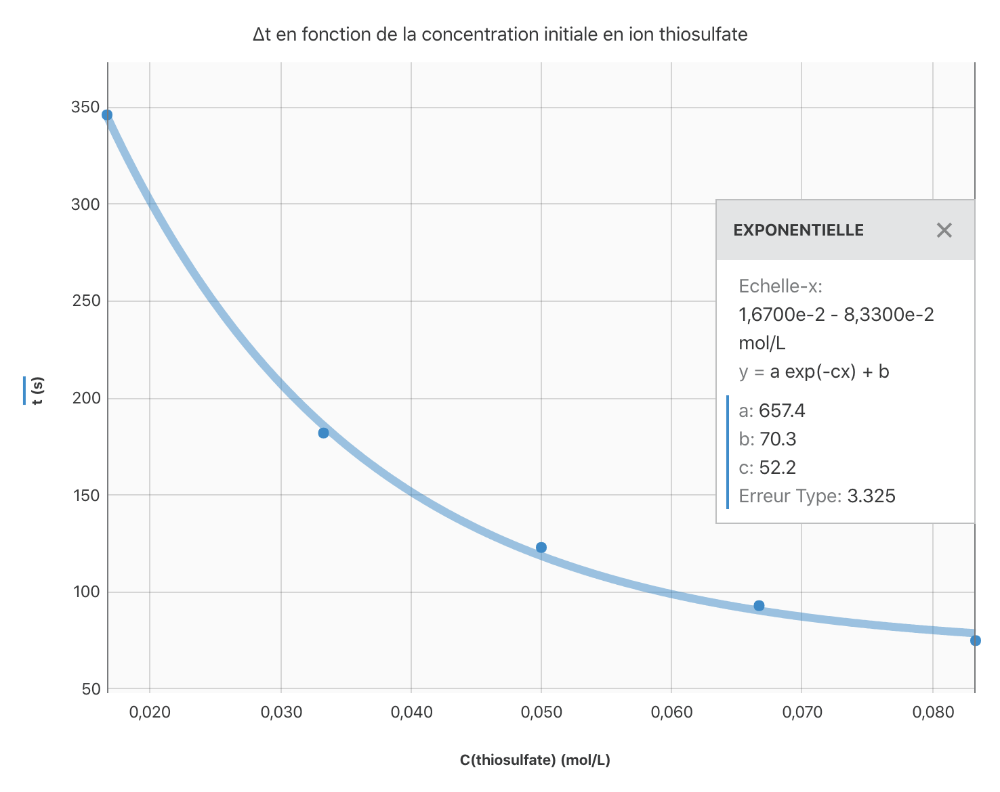

Cinétique chimique
La cinétique chimique est l’étude de la vitesse des réactions chimiques.
Certaines réactions sont très rapides voire instantanées, comme les *explosions. D’autres sont tellement lentes qu’elles durent plusieurs années (comme la formation de la rouille), voire plusieurs siècles (comme la formation du charbon ou du pétrole). Certaines sont même tellement lentes que les réactifs de départ sont considérés comme stables, par exemple la transformation du diamant en carbone graphite. On parle alors d’états « métastables ».
Connaître la vitesse des réactions chimiques et être capable de la calculer est de toute première importance dans toutes les applications de la chimie.
Facteur cinétique
Dans le domaine de la chimie, un facteur cinétique désigne un paramètre physique capable d’influencer la vitesse d’une transformation chimique. Un facteur cinétique modifie donc la durée d’évolution d’un système chimique.
Plusieurs facteurs cinétiques peuvent être envisagés comme la température, la pression, la concentration des réactifs, etc. Il faut cependant noter qu’un facteur cinétique n’a pas systématiquement une influence sur toutes les transformations chimiques.
Réaction de dismutation
On appelle réaction de dismutation une réaction d’oxydoréduction au cours de laquelle une espèce chimique joue à la fois le rôle de l’oxydant et celui du réducteur.
Exemple.
Le dichlore $\ce{Cl2}$ apparaît dans les deux couples $\ce{Cl2/Cl^-}$ et $\ce{ClO3^-/Cl2}$. En milieu basique, le dichlore réagit avec les ions hydroxyde $\ce{HO^-}$ : $$ \ce{3 Cl_2(aq) + 6 HO^−(aq) -> 5 Cl^−(aq) + ClO_3^−(aq) + 3 H_2O} $$
Objectif de la séance
L’objectif de cette séance est d’observer l’influence de certains facteurs cinétique sur la réaction de dismutation des ions thiosulfate $\ce{S_2O_3^{2-}}$ en milieu acide.
Influence de la concentration des réactifs
Principe de la manipulation
À partir des deux solutions :
- de thiosulfate de sodium notée $S_1$ de concentration $C_1 = \pu{0,10 mol.L-1}$,
- d’acide chlorhydrique notée $S_2$ de concentration $C_2 = \pu{1,0 mol.L-1}$,
préparer différents mélanges, de même volume final $V_f$ mais ayant des proportions différentes en $S_1$, en eau et en $S_2$.
Pour chaque essai, chronométrer la durée $\Delta t$ pour qu’une même quantité de soufre se forme, c’est-à-dire la durée pour obtenir la disparition visuelle d’un repère.
En pratique, réaliser les 5 mélanges différents du tableau ci-dessous et
- Mesurer avec une éprouvette graduée, les volumes $V_1$ de $S_1$ et $V$ d’eau. Verser ces volumes dans un bécher.
- Placer le bécher sur l’étiquette avec la croix noire.
- Préparer dans une autre éprouvette graduée le volume $V_2$ de $S_2$.
- Déclencher le chronomètre à l’instant du mélange de la solution $S_2$ avec le contenu du bécher.
- Noter la durée $\Delta t$ nécessaire pour que la croix noire disparaisse, en regardant au dessus du bécher.
| Température | Essai | $V_1$ | $V$ | $V_2$ | $\Delta t$ | $n_0(\ce{S2O3^{2-}})$ | $[\ce{S2O3^{2-}}]_0$ | $n_0(\ce{H3O^+})$ | $[\ce{H3O^+}]_0$ |
|---|---|---|---|---|---|---|---|---|---|
| Ambiante | 1 | 10,0 | 40,0 | 10,0 | |||||
| Ambiante | 2 | 20,0 | 30,0 | 10,0 | |||||
| Ambiante | 3 | 30,0 | 20,0 | 10,0 | |||||
| Ambiante | 4 | 40,0 | 10,0 | 10,0 | |||||
| Ambiante | 5 | 50,0 | 0,0 | 10,0 |
Tableau 1. Les volumes sont indiqués en $\pu{mL}$, la durée en $\pu{s}$, les quantités de matière en $\pu{mol}$ et les concentrations en $\pu{mol.L-1}$.
Influence de la température du système
Principe de la manipulation
On élève ou abaisse la température du mélange réactionnel avant que la réaction chimique ne s’amorce et on mesure la durée $\Delta t$ pour qu’une même quantité de soufre se forme, c’est-à-dire la durée pour obtenir la disparition visuelle d’un repère.
En pratique, reprendre les proportions de réactifs et d’eau de l’essai 1 et porter le mélange {eau — thiosulfate de sodium} à une température différente avant de l’ajouter à l’acide chlorhydrique :
- $T\rq > T_{\text{ambiante}}$ grâce à un bain marie (environ $\pu{50 °C}$) ;
- $T\rq < T_{\text{ambiante}}$ grâce à un bain réfrigérant (environ $\pu{10 °C}$).
| Température | Essai | $V_1$ | $V$ | $V_2$ | $\Delta t$ | $n_0(\ce{S2O3^{2-}})$ | $[\ce{S2O3^{2-}}]_0$ | $n_0(\ce{H3O^+})$ | $[\ce{H3O^+}]_0$ |
|---|---|---|---|---|---|---|---|---|---|
| $T\rq > T_{\text{ambiante}}$ | 6 | 10,0 | 40,0 | 10,0 | 80 |
||||
| $T\rq < T_{\text{ambiante}}$ | 7 | 10,0 | 40,0 | 10,0 | 106 |
Les volumes sont indiqués en $\pu{mL}$, la durée en $\pu{s}$, les quantités de matière en $\pu{mol}$ et les concentrations en $\pu{mol.L-1}$.
Exploitation
On donne les couples oxydant/réducteur : $\ce{SO2 / S2O3^{2-}}$ et $\ce{S2O3^{2-}} / \ce{S}$.
- Repérer les différentes durées $\Delta t$ dans la vidéo et les reporter dans le tableau 1.
Réponse
Essai 1 : $\Delta t = \pu{346 s}$ ; essai 2 : $\Delta t = \pu{182 s}$ ; essai 3 : $\Delta t = \pu{123 s}$ ; essai 4 : $\Delta t = \pu{93 s}$ ; essai 5 : $\Delta t = \pu{75 s}$.
- Écrire les demi-équations correspondant aux couples mis en jeu.
Réponse
-
$\ce{SO2 / S2O3^{2-}}$ : $$\ce{2H^+ + 2SO2 + 4e^- = S2O3^{2-} + H2O }$$
-
$\ce{S2O3^{2-}} / \ce{S}$ : $$\ce{ 6H^+ + S2O3^{2-} + 4 e^- = 2\ce{S} + 3 H2O }$$
- Écrire l’équation de la réaction associée à la transformation.
Réponse
$$ \ce{ S2O3^{2-}(aq) + 2 H^+ -> S + H2O + SO2 } $$
- Quel est l’oxydant ? Le réducteur ? Justifier l’appellation dismutation de cette réaction.
Réponse
Les ions thiosulfate jouent le rôle de l’oxydant et du réducteur ; il s’agit donc bien d’une réaction de dismutation.
Les ions $\ce{H^+}$ ne sont ni oxydés ni réduits lors de cette réaction. Ils assurent le caractère acide du milieu réactionnel.
-
Construire le tableau d’avancement.
-
Compléter les différentes colonnes relatives aux quantités de matière dans les tableaux.
- L’un des essais correspond-il aux proportions stœchiométriques ?
Réponse
La relation $\dfrac{n_0( \ce{S2O3^{2-}} )}{1} = \dfrac{ n_0(\ce{H^+}) }{2}$ est vérifiée pour l’essai 5. Le mélange initial est donc dans les proportions stœchiométriques dans l’essai 5.
- Quelle serait la quantité de matière de soufre formée après un temps très long pour l’essai 1.
- Quelle seraient les quantités de matière de soufre formées après un temps très long pour les autres essais ?
- Compléter les différentes colonnes relatives aux concentrations dans les tableaux.
- Tracer le graphique $ \Delta t = f([\ce{S2O3^{2-}}]_0)$. La relation est-elle linéaire ?
Réponse

Conclusions
- Quels essais peut-on comparer entre eux ? Préciser à chaque fois quel est le paramètre dont on étudie l’influence.
Réponse
On peut comparer les essais :
- 1, 2, 3, 4, 5 pour étudier l’influence de la concentration des réactifs ;
- 4, 6, 7 pour étudier l’influence de la température.
- En déduire l’influence de la concentration initiale en ion thiosulfate sur la vitesse de réaction.
Réponse
Plus la concentration en ion thiosulfate augmente, plus la durée pour atteindre l’état final diminue.
- En déduire l’influence de la température sur la vitesse de réaction.
Réponse
Plus élevée est la température, plus petite est la durée pour atteindre l’état final.